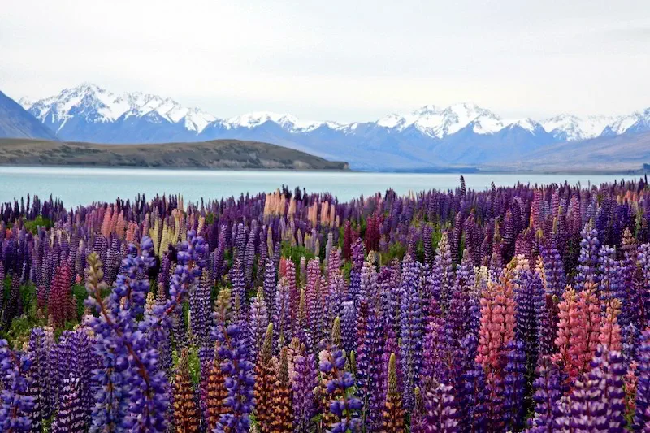
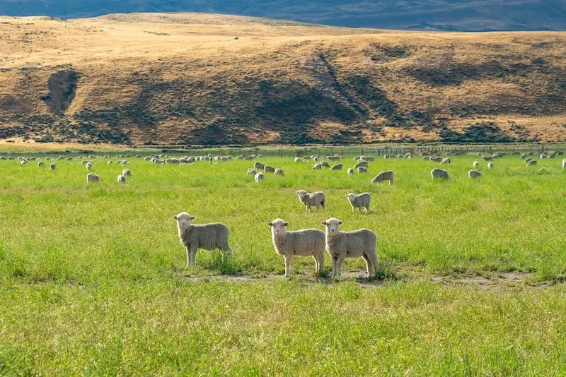
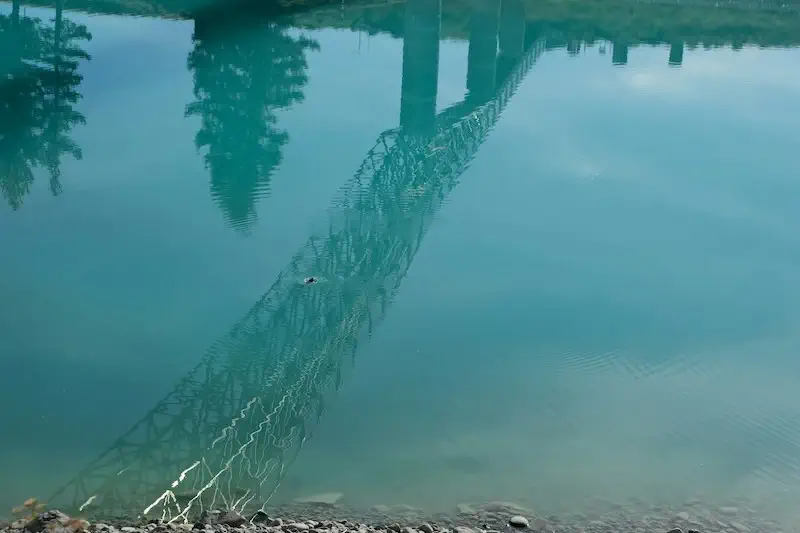
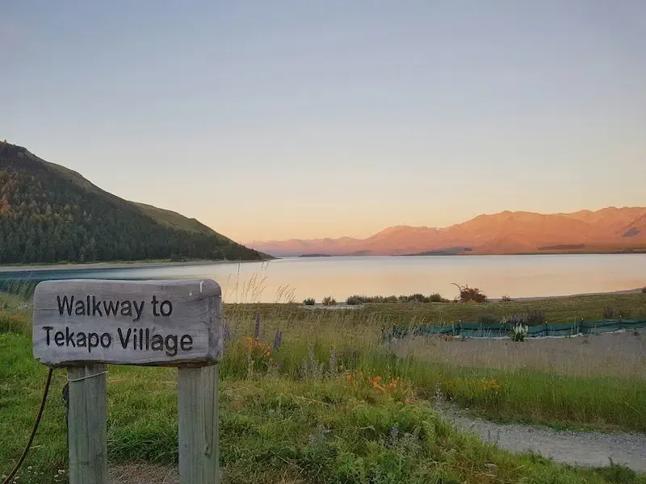
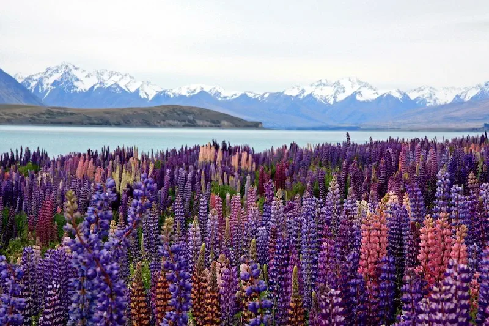
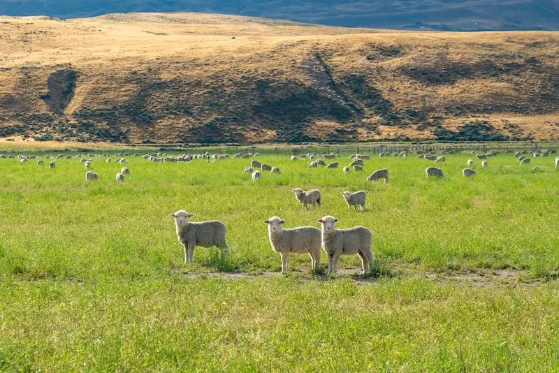
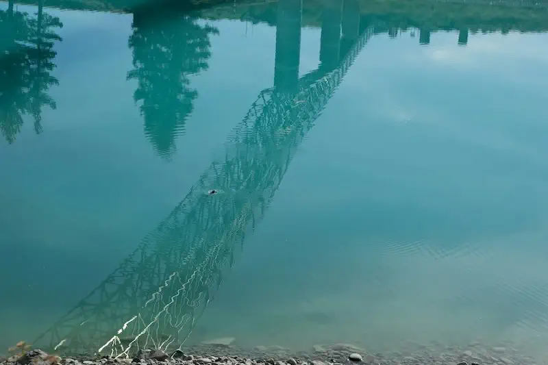
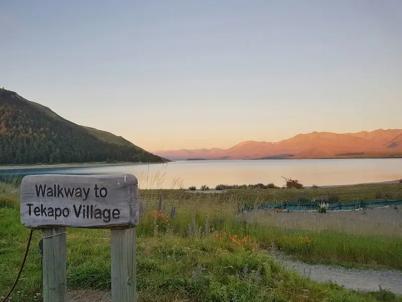

×
Nestled in the heart of New Zealand's South Island, Lake Tekapo is a pristine gem waiting to be discovered. Imagine a place where the crystal-clear turquoise waters of the lake meet the towering peaks of the Southern Alps, creating a picturesque backdrop that feels straight out of a dream. During the day, explore the breathtaking landscapes with a hike through vibrant lupine fields or a leisurely bike ride along the lakeshore. As night falls, the magic of Lake Tekapo truly comes alive under the canopy of one of the world's most spectacular dark sky reserves. Stargazers are treated to an awe-inspiring display of the Milky Way and countless constellations, making every visit an unforgettable celestial experience. Whether you're seeking adventure or tranquility, Lake Tekapo offers a unique blend of natural beauty and serene charm that captivates every traveler.
 







Discover our exclusive private retreat at Lake Tekapo, New Zealand, crafted for small groups craving a unique and intimate escape. Tucked away in a peaceful location, our luxurious villa features spacious bedrooms, a lush garden, and a serene private pool. Enjoy the convenience of fully equipped kitchens, cozy living areas, and expansive outdoor spaces perfect for group activities and alfresco dining. Immerse yourself in the breathtaking beauty of Lake Tekapo’s turquoise waters and majestic mountains, making every moment of your stay both relaxing and memorable.
| Total Cost: $4,000 | |
| What's Included? | What's Not Included? |
|---|---|
| Private hotel room | Airfare |
| All meals & experiences | Airport travel to hotel |